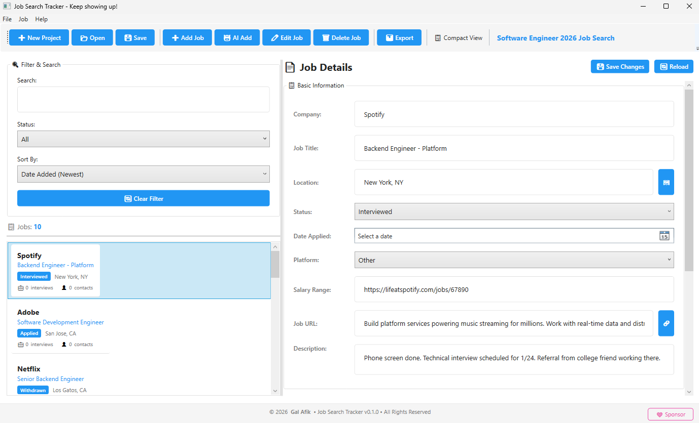
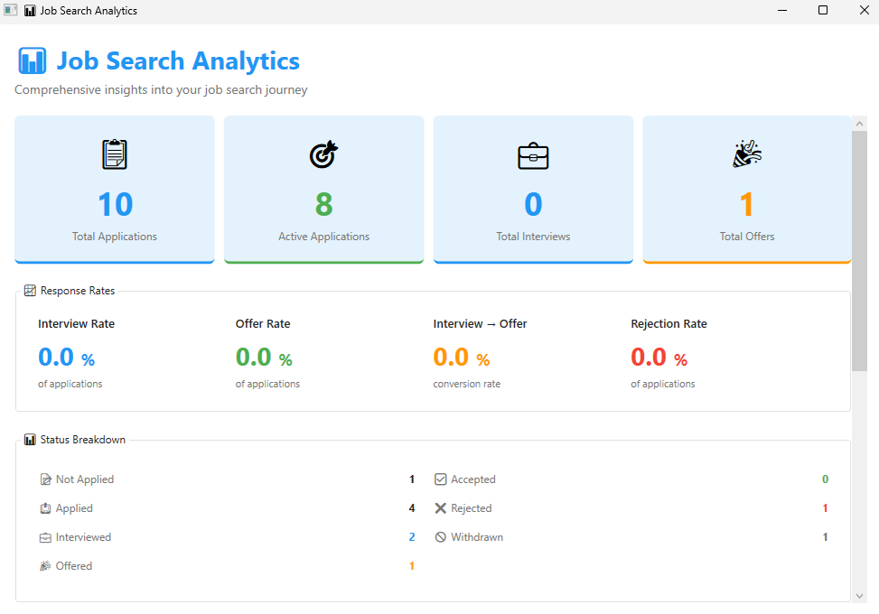
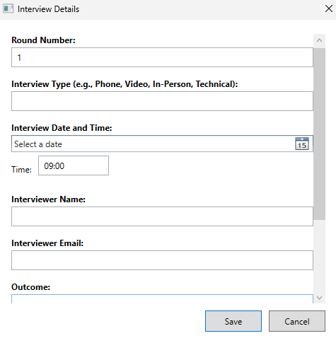
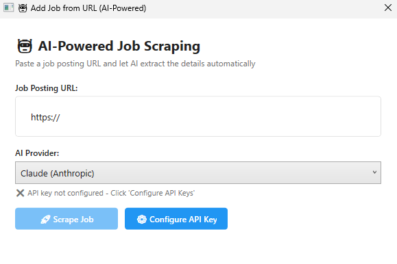

Transform chaos into clarity with AI-powered job search management. Built by a job seeker, for job seekers—because finding work shouldn't feel like another job.
Stop juggling spreadsheets, browser tabs, and sticky notes. One powerful app to organize your entire job search journey.
Manage applications with company names, job titles, locations, statuses, dates, salary ranges, and detailed notes—all in one beautiful interface.
Paste any job URL and let AI automatically extract company info, job title, location, and full description. Works with Claude, OpenAI, and Gemini.
Track interview rounds, types (phone, video, in-person, technical), dates, and interviewer contacts—never miss another opportunity.
Keep detailed records of recruiters, hiring managers, and networking connections with emails, phone numbers, and LinkedIn profiles.
View 15+ metrics including total applications, interview rates, offer conversion, and platform performance. Know what's working and what's not.
Switch between modern light and dark themes. Compact view options and motivational messages keep you encouraged through the journey.
All data stored locally in JSON files on your computer. No cloud services, no accounts, no tracking. Your job search stays completely private.
Import existing spreadsheets or export to CSV and Excel. Create multiple projects for different job search campaigns or time periods.
Clean, modern interface designed to reduce stress and increase productivity during your job search.




Download the latest version for Windows 10/11. Simple installer, no complicated setup. Runs on your computer—no internet required for core features.
⚠️ Development Notice: This is a pre-1.0 release under active development. Intended for personal use only. Features may change, and bugs may occur.
Launch the app and create a new job search project. You can create multiple projects for different job campaigns or separate them by time period.
Start adding jobs manually or paste URLs to let AI extract the details automatically. Add interview schedules and recruiter contacts as you go.
Update application statuses, track interview outcomes, and review analytics to optimize your job search strategy. Export reports whenever you need them.
Minimum Requirements:
Recommended:
For AI Features:
Download now and take control of your job hunting journey. 100% free, always will be.
Pre-1.0 development release – personal use only
Download older versions of Job Search Tracker